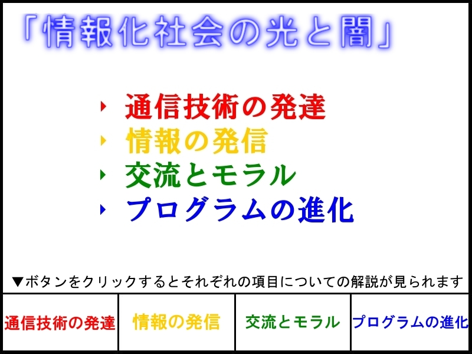

 このサイトについて
このサイトは情報化社会の発展に伴って発生する「光」すなわち長所と「闇」すなわち短所についてまとめたものです。
このサイトでは全体を ●「通信技術の発達」 ●「情報の発信」 ●「交流とモラル」 ●「ブログラムの進化」 の４つのテーマに分けて構成しており（詳しくはサイトマップをご覧ください）、各テーマのトップには各ページ上に設置されているメニューボタンから移動することができます。 文章のページではこの色の単語の上にマウスを置くとその単語についての説明が見られます。 推奨環境
このサイトはInternet Explorer 8での閲覧を基本として構成されています。
その他、Internet Explorer 7, 9 Beta, Firefox 3, Google Chrome, Opera, Safari で正常に表示されることを確認しています。 このサイトは「第13回全日本中学高校WebコンテストThinkQuest JAPAN」規定部門にエントリーしております。HTML,CSS,静止画像以外の技術は使用しておりません。したがって、javascript等有効にする必要はございません。 参考文献
|


|
(c) 2010-2011 Team "情報化社会の光と闇" All rights reserved. Created by ez-HTML |